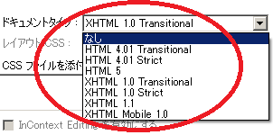

DTDとはいったい何でしょうか？
「DTD」はドキュメントタイプのことですが、HTMLを書く際、まずはどのバージョンで書くのかを宣言する必要があります。
「HTML 4.01」や「XHTML 1.0」などのバージョンによって書き方が違うため、文書の型を宣言した上で、そのルールにそった書き方をする必要があります。
2000年代初頭から運営の古いホームページの場合、「HTML 4.01」のDTDバージョンで書かれていることが多いです。一方、「XHTML 1.0」は当サイトを開設した2009年頃の主流でしたが、2018年現在の最新バージョンは「HTML5」となっています。
「HTML 4.01」（かなり昔）→「XHTML 1.0」（以前の主流）→「HTML5」（最新）
このDTDの種類についてですが、ホームページ作成ソフトのDreamweaverを参考にしてみますとテンプレートには７種類のDTDが用意されています。

「HTML 4.01」や「XHTML 1.0」はさらに「Transitional」や「Strict」に分かれており、緩さや厳格さの点で違いがあります。
DTDは何を選択すればよいのか？
このなかでどれを選択すればよいのかについては、古いタイプの「HTML 4.01」については避けるべきです。現在は「4」ではなく、「5」の「HTML5」の時代のため、「HTML 4.01」を選択するのはあまり意味がありません。
また、当サイトを開設した2009年頃は「XHTML 1.0 Transitional」が主流で、ロイターやNHK、時事通信、産経ニュース、あるいはブルームバーグや日経、朝日など、主要なニュースメディアの多くで「XHTML 1.0」が選択されていました。
けれども、2016年頃から徐々に「HTML5」へと移行するメディアが多くなり、2018年の現在、大手サイトではほぼ「HTML5」のDTDが採用されています。
そのため、今後は最新の「HTML5」を選択されるとよいでしょう。
- HTML 4.01 Transitional → かなり古い（200x年頃）
- HTML 4.01 Strict → かなり古い（200x年頃）
- HTML 5 → 最新バージョン（2016年頃から主流へ）
- XHTML 1.0 Transitional → 以前までの主流（いまだ健在）
- XHTML 1.0 Strict → あまり見たことない（厳格なバージョン）
- XHTML 1.1 → あまり見たことない
- XHTML Mobile 1.0 → ガラケーサイト用でほぼ消滅
ちなみに、文字コードについては「HTML5」でも「XHTML 1.0」でも「UTF-8」を選択しておけば間違いありません。
「HTML5」のDTDのサンプル
「HTML5」はIE8以下の古いブラウザには未対応のため、2015年頃はまだ時期尚早な感もありましたが、IE8ユーザー数の減少により、2016年頃には切り替えるサイトも多くなってきました。現在はまだ過渡期ですが、今後の主流になると思われます。
当サイトでは「HTML5」で記載しておりますが、このように書きはじめてます。
大文字、小文字の違いで<!doctype html>や<!DOCTYPE HTML>などのケースもありますが、どちらでもかまいません。
HTMLの書き方については、空要素の<br>と<br />などについて「半角スペースとスラッシュ」のあり・なしで違いがありますが、「XHTML 1.0」から「HTML5」へ移行しやすいように配慮されており、どちらでも問題なくなっています。
ページが出来あがってからhtmlの文法チェックをして、おかしなところを修正していけばよいでしょう。
既存サイトを「HTML5」へ修正する方法については、こちらのページなどをご参照ください。
→ HTML5への修正方法
「XHTML 1.0 Transitional」のDTDのサンプル
以前まで当サイトは「XHTML 1.0 Transitional」、文字コードは「UTF-8」で作成していましたが、現在でも見かけることが多いです。
このXHTMLで書いていく際には「XML宣言」も必要になります。
<?xml version="1.0" encoding="UTF-8"?>
この「XML宣言」はIEバグの関係で省略されているケースもあります。
どのように宣言して書き始めればよいのかといいますと、当サイトではこのような書きはじめがぶなんと考えております。
もしくは、「XML宣言」の<?xml version="1.0" encoding="UTF-8"?>を省略した形でもよいでしょう。
metaタグやタイトルタグの位置についてはサイトによってバラツキがあり、タイトルタグを最後に持っていったり、あるいはできるだけ前に出したりとケース・バイ・ケースです。
文字コードにつきましては「euc-jp」や「shift-jis」でも問題ないとは思いますが、海外製のCMSや海外サーバーではまったく使えないケースもありますし、何かと文字化けすることも多いため、一般的な「UTF-8」を選択しておけば間違いないでしょう。
この「XHTML 1.0 Transitional」については、改行タグの<br>を<br />と書いたり、<hr>を<hr />と書いたりといった決まりがありますが、多少間違っていてもブラウザではきちんと表示されます。
ちなみに、ウェブ標準の規格を決めているW3Cのサイトは「XHTML 1.0 Strict」で書かれていますが、こちらはXHTML 1.0の厳格なバージョンになります。一般的なサイトは、厳格な「Strict」で書く必要性は特にありませんので、「Transitional」を選択されるとよいでしょう。